Dining room
120-seat venue
For celebrations and restaurant-wide gatherings, surrounded by sandy beige booths, marble tables and the theatre of the open fire.

Functions & events
Enter the realm of Dark Shepherd for events where decadence and desire intertwine. This concept keeps the original functions intent: venue scale, private dining, cocktails, wines and enquiry.
Dining room
For celebrations and restaurant-wide gatherings, surrounded by sandy beige booths, marble tables and the theatre of the open fire.
Private dining
A semi-private curtained room for intimate dinners, business meals and moments that need a little shadow.